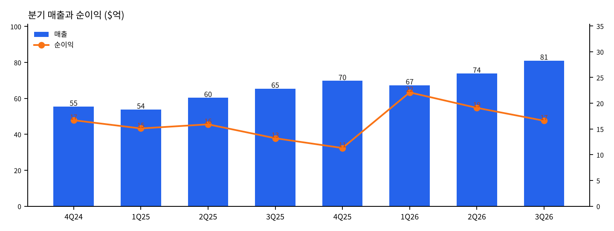
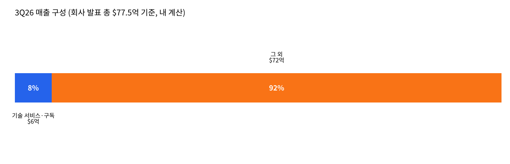
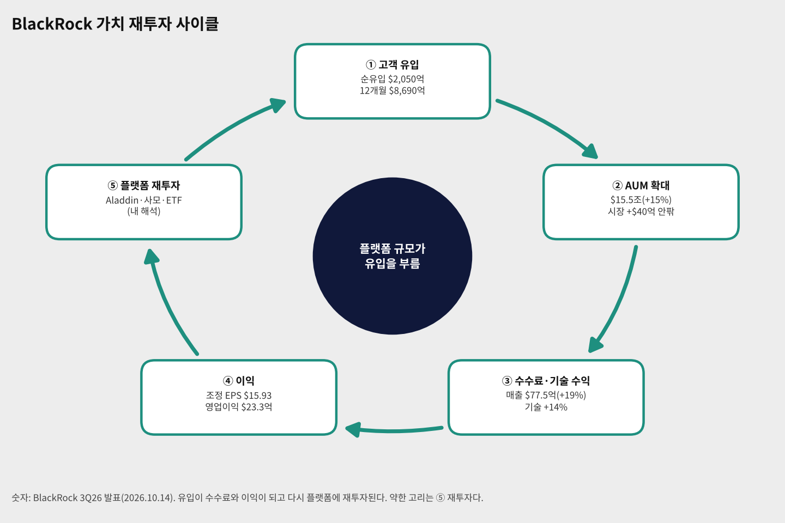

BlackRock은 고객 돈을 굴리고 AUM에 비례한 수수료를 받는다. 여기에 Aladdin 같은 기술 구독이 더해져 시장 변동에 덜 흔들리는 수익을 만든다.
| 항목 | 내용 |
|---|---|
| 종목 | BlackRock (BLK) · NYSE · 금융(자산운용) · 뉴욕 |
| 최근 분기(3Q26) | 매출 $77.5억, AUM $15.5조, 순유입 $2,050억 |
| 핵심 상품 | iShares ETF, 채권·시스템 액티브, 사모시장, Aladdin |
| 직원 수 | 약 24,900명(트레이딩뷰) |
| 멀티플 | PER·PEG·P/S는 08~10 항목 표 참조 |
| 직책 | 인물 | 역할·특징 |
|---|---|---|
| 회장·CEO | 래리 핑크(Larry Fink) | 회사 설립자 중 한 명. 이번 분기 "자본 수요가 커지고 BlackRock이 그 중심"이라고 설명 |
| CFO | (확인 필요) | 회사 공개 자료 기준 확인 필요 |
경영 스타일: 통합 플랫폼. 투자·자금 조달·기술을 한 고객에게 묶어서 파는 전략이다.
자산 운용·리스크 관리 소프트웨어를 구독으로 판다. 기술 서비스·구독 매출은 전년보다 14% 늘었다.
AI 인프라 금융을 모기지 증권화 초기에 비유했다. 사모대출·인프라 금융 확대가 방향이다.
다음 실적발표는 세 가지 질문에 답하는 자리다.
1. 순유입이 이어지나?
2. 사모 환매 압력이 풀리나?
3. 기술 구독이 두 자릿수로 크나?
한 줄 판정 규칙: 첫 질문(순유입)이 이어지면 약한 고리(⑤ 재투자 근거)가 아니라 유입이 사이클을 끌고 간다고 볼 수 있다.
일정: 4Q26 실적 발표는 트레이딩뷰 기준 2027.01.21(확인 필요).
| 분기 | 매출 | 순이익 | EPS | 조정 EPS | 특이 사항 |
|---|---|---|---|---|---|
| 4Q24 | $55.4억 | $16.7억 | 10.64 | 11.93 | |
| 1Q25 | $53.8억 | $15.1억 | 9.64 | 11.30 | |
| 2Q25 | $60.3억 | $15.9억 | 10.20 | 12.05 | |
| 3Q25 | $65.4억 | $13.2억 | 8.01 | 11.55 | |
| 4Q25 | $69.7억 | $11.3억 | 7.16 | 13.16 | |
| 1Q26 | $67.3억 | $22.1억 | 13.41 | 12.53 | |
| 2Q26 | $73.8억 | $19.1억 | 11.62 | 13.91 | |
| 3Q26 | $81.0억 | $16.6억 | 10.57 | 15.93 | 순유입 $2,050억, AUM $15.5조 |
매출은 트레이딩뷰 스캐너의 분기 총매출이라 회사가 발표한 순매출과 다를 수 있다. 3Q26 GAAP EPS는 회사 발표값 $10.57로 대체했다. 매출·순이익·EPS(GAAP 희석)는 트레이딩뷰 스캐너, 조정 EPS는 트레이딩뷰 실적 페이지의 Reported 값이다. 분기 정렬은 오래된 분기→최신이다.

흐름 요약: 최근 분기 매출은 $81.0억로 전년 동기 $65.4억 대비 +23.9%, 순이익은 $16.6억(전년 $13.2억)다. 최근 4분기 GAAP EPS는 $42.76, 조정 EPS는 $55.53다.
| 항목 | 내용 | 3Q26 금액 | 비고 |
|---|---|---|---|
| 기술 서비스·구독 | Aladdin 등 | $5.88억 | +14% |
| 그 외(내 계산) | 기본수수료·성과보수 등 | $71.6억 | 총 $77.5억에서 위 항목을 뺀 값 |

수수료 대부분은 AUM과 연결돼 있어 주식·채권 시장 수준에 따라 움직인다. 기술 구독은 비중이 작지만 증가율이 높다.
BlackRock은 투자·자금 조달·기술을 통합해 고객 자본이 필요한 곳에 쓰이게 하는 것을 목표로 한다.
| 축 | 내용 |
|---|---|
| 규모 | AUM $15.5조 |
| 유입 | 12개월 $8,690억 |
| 기술 | Aladdin 구독 +14% |

| 이동평균 | 값 | 종가 대비 | 위치 |
|---|---|---|---|
| 5일선 | $1,197.47 | -2.4% | 종가 아래 |
| 20일선 | $1,177.69 | -0.7% | 종가 아래 |
| 50일선 | $1,118.51 | +4.5% | 종가 위 |
| 100일선 | $1,107.81 | +5.5% | 종가 위 |
| 200일선 | $1,068.35 | +9.4% | 종가 위 |
52주 고가 $1,242.12(2026-11-05)·저가 $917.39(2026-03-12) 범위에서 종가 $1,169.21는 50일선, 100일선, 200일선을 웃돌고 5일선, 20일선은 밑돈다.
| 규칙 | 기준 | 현재 값 | 신호 |
|---|---|---|---|
| 장기 추세 필터 | 종가 vs 200일선 | $1,169.21 > $1,068.35 | 매수 |
| 중장기 교차 | 50일선 vs 200일선 | $1,118.51 > $1,068.35 | 매수 |
| 단기 교차 | 20일선 vs 50일선 | $1,177.69 > $1,118.51 | 매수 |
| 돈키언 채널 | 55일 고가 $1,242.12 / 저가 $1,017.46 | 중간값 $1,129.79 위 | 매수 |
| 1개월 모멘텀 | 21거래일 수익률 | +3.6% (기준 $1,128.68) | 매수 |
| 3개월 모멘텀 | 63거래일 수익률 | +2.6% (기준 $1,139.82) | 매수 |
| 6개월 모멘텀 | 126거래일 수익률 | +11.2% (기준 $1,051.57) | 매수 |
| 12개월 모멘텀 | 252거래일 수익률 | +14.2% (기준 $1,023.80) | 매수 |
| 종합 (8개 평균) | +1.00 | 강한 매수 |
해석: 매수 신호 8개(장기 추세 필터, 중장기 교차, 단기 교차, 돈키언 채널, 1개월 모멘텀, 3개월 모멘텀, 6개월 모멘텀, 12개월 모멘텀), 매도 신호 0개(없음). CTA 점수 +1.00(강한 매수). 14일 ATR $34.54 (3.0%), 52주 고가 $1,242.12 · 저가 $917.39.
| 가격 | 기준 | 무엇이 바뀌나 |
|---|---|---|
| $1,242.12 | 55일 고가 | 돌파 시 채널 상단 갱신 |
| $1,139.82 | 3개월 모멘텀 기준가 | 종가가 이 가격 위면 3개월 신호 매수 |
| $1,129.79 | 돈키언 중간값 | 55일 채널 중간값 위/아래로 신호가 바뀜 |
| $1,128.68 | 1개월 모멘텀 기준가 | 종가가 이 가격 위면 1개월 신호 매수 |
| $1,068.35 | 200일선 | 종가가 이 선 위/아래인지로 장기 추세 신호가 바뀜 |
| $1,051.57 | 6개월 모멘텀 기준가 | 종가가 이 가격 위면 6개월 신호 매수 |
| $1,023.80 | 12개월 모멘텀 기준가 | 종가가 이 가격 위면 12개월 신호 매수 |
| $1,017.46 | 55일 저가 | 이탈 시 채널 하단 갱신 |
가격 수준은 신호가 바뀌는 기준선일 뿐 진입·청산 가격 제안이 아니다. 20일/50일 교차는 이동평균 자체가 움직여 단일 가격으로 표시하지 않았다. 일봉·주봉은 종가 기준 직접 계산(고저 데이터 미사용)이다.
| 악재 요인 | 내용 | 강도 |
|---|---|---|
| 금리·채권 가격 | 연준 9월 인상(3.75~4%), 채권 금리 상승 | 중간 |
| 사모 환매 | HPS 사모대출 펀드 환매 압력(완화) | 중간 |
| 시장 의존 | AUM 증가분의 일부($40억 안팎 평가이익)는 시장 상승에서 온다 | 참고 |
| 티커 | 회사 | PER(TTM) | PEG | P/S | EPS 성장(YoY) |
|---|---|---|---|---|---|
| BLK | BlackRock | 21.1배 | 1.13 | 6.49배 | +19% |
| SCHW | Charles Schwab | 15.8배 | 0.42 | 5.22배 | +38% |
| MS | Morgan Stanley | 14.4배 | 0.49 | 3.59배 | +29% |
| BX | Blackstone | 25.8배 | 0.90 | 5.89배 | +29% |
| KKR | KKR | 27.3배 | 0.60 | 3.64배 | +46% |
비교 결론: BlackRock의 PER 21.1배는 Schwab·Morgan Stanley보다 높고 Blackstone·KKR보다 낮다. PEG 1.13는 네 곳 모두보다 높다.
은행형 대차대조표가 아니라 운용사의 자기자본·부채를 본다. 현금·부채는 트레이딩뷰 스캐너 값이다.
| 지표 | 값 | 출처 | 해석 |
|---|---|---|---|
| 현금·단기투자 | $129억 | 트레이딩뷰 스캐너(최근 분기) | |
| 총부채 | $150억 | 트레이딩뷰 스캐너(최근 분기) | |
| 순부채(부채−현금) | $21억 | 내 계산 | 현금 대비 부채 부담 |
| 잉여현금흐름(TTM) | $47억 | 트레이딩뷰 스캐너 | |
| TTM 매출 | $292억 | 트레이딩뷰 스캐너 |
| 기준 | 매출 | P/S | 비고 |
|---|---|---|---|
| 내 계산(종가 ÷ 최근 4분기 매출 합계) | $291.8억 | 6.49배 | 시총은 정렬용 데이터에서만 사용 |
| 동종(트레이딩뷰) | – | SCHW 5.22배 · MS 3.59배 · BX 5.89배 · KKR 3.64배 | 11.19 |
해석: BlackRock은 TTM 매출 대비 FCF 비율이 높다(아래 표). 부채는 회사채 중심이라 이자 부담은 영업이익으로 충분히 가려진다(내 해석).
EBITDA는 영업활동의 현금 창출력을 보는 지표이고, PEG는 PER을 EPS 성장률로 나눈 값이다. EBITDA·FCF는 트레이딩뷰 TTM 값이다.
| 지표 | 값 | 산출 |
|---|---|---|
| EBITDA(TTM) | $120억 | 트레이딩뷰 스캐너 |
| EBITDA 마진 | 41.1% | EBITDA ÷ TTM 매출(내 계산) |
| FCF 마진 | 16.1% | FCF ÷ TTM 매출(내 계산) |
| PER(GAAP TTM) | 27.3배 | $1,169.21 ÷ $42.76 |
| PER(조정 TTM) | 21.1배 | $1,169.21 ÷ $55.53 |
| 방식 | PER | EPS 성장률 | PEG | 판정 |
|---|---|---|---|---|
| 조정 EPS (TTM $55.53) | 21.1배 | +19% ($46.83 → $55.53) | 1.13 | 기준 초과 |
| GAAP EPS (TTM $42.76) | 27.3배 | +11% ($38.49 → $42.76) | 2.46 | 기준 초과 |
판정: 조정 EPS 기준 PEG 1.13 → 1.0 초과 PEG 기준은 1.0 이하 투자 적격, 0.5 이하 적극 매수다. EPS 성장률은 최근 4분기 EPS 합계를 직전 4분기 합계와 비교한 값(내 계산)이고, 일회성 항목이 있으면 조정 EPS 행을 함께 본다.

BlackRock의 사이클: 유입이 AUM과 수수료를 키우고 그 이익이 기술·상품에 다시 투자돼 다음 유입을 부른다.
| 고리 | 현재 숫자·근거 |
|---|---|
| ① 고객 유입 | 3Q 순유입 $2,050억 · 12개월 $8,690억 · iShares $1,350억 |
| ② AUM 확대 | AUM $15.5조(+15%) |
| ③ 수수료·기술 수익 | 매출 $77.5억(+19%) · 기술 서비스 $5.88억(+14%) |
| ④ 이익 | GAAP 영업이익 $23.3억(+19%) · 조정 EPS $15.93 |
| ⑤ 플랫폼 재투자 | 기술·사모 인수 투자 금액은 보고서에 없음(내 해석) |
사이클의 특징: 약한 고리는 ⑤ 재투자다(투자 규모 수치가 보고서에 없다). "(내 해석)"은 보고서 수치가 아닌 해석이다.